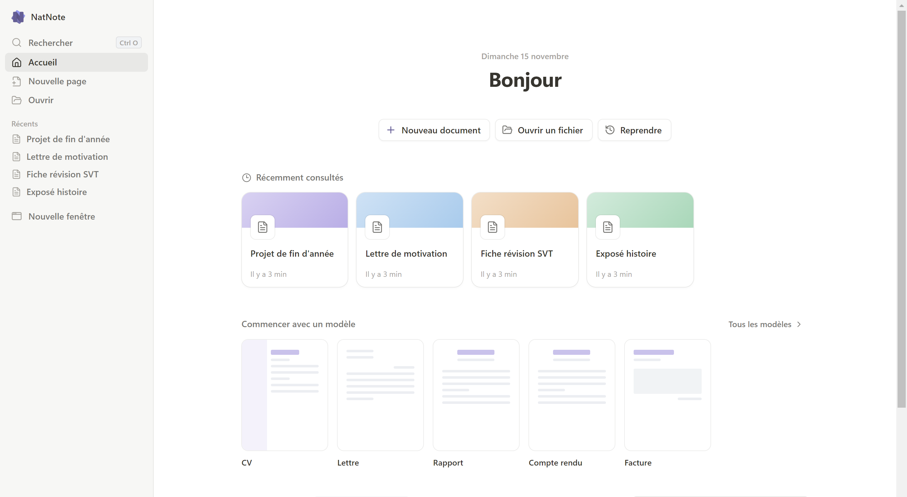
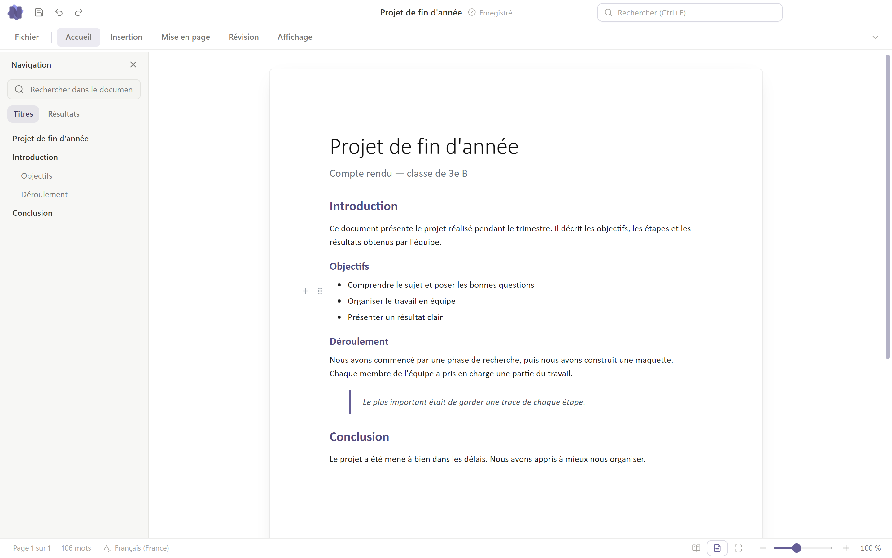

Écrire,
simplement.
NatNote est un traitement de texte léger et élégant pour Windows. Tout ce qu'il faut pour vos cours, exposés et lettres — rien de plus.

Tout l'essentiel,
sans le superflu.
Une interface calme qui laisse toute la place à votre texte.
Compatible Word
Ouvrez et enregistrez vos fichiers .docx, exportez en PDF en un clic.
Modèles prêts
CV, lettre, rapport, compte rendu, facture : démarrez en quelques secondes.
Synchro Google Drive
Connectez votre compte Google : documents et réglages vous suivent partout.
Mode focus
Plein écran, sans distraction. Zoomez avec Ctrl + molette.
Mise en forme rapide
Sélectionnez du texte : une barre apparaît avec police, taille, couleur et surlignage.
Paramètres prédéfinis
Une charte (police, marges, titres) appliquée à tous vos documents, d'un clic.
Navigation par titres
Le plan du document toujours visible, pour sauter d'une partie à l'autre.
Mode sombre
Pour écrire le soir sans se fatiguer les yeux.
Portable
Un seul fichier, aucune installation. Fonctionne même depuis une clé USB.
Une page blanche,
et vos idées.
Le ruban se replie pour ne garder que l'essentiel. Rouvrez-le d'un clic quand vous en avez besoin.
- Styles de titres cohérents en un clic
- Enregistrement et récupération automatiques
- Recherche dans le document avec Ctrl + F
- Raccourcis familiers : Ctrl + S, Ctrl + B, Ctrl + Z…

Prêt en 30 secondes.
Pas d'installateur, pas de compte obligatoire.
Téléchargez
Cliquez sur « Télécharger » pour récupérer le fichier NatNote.exe.
Placez-le où vous voulez
Bureau, dossier Documents ou clé USB : vos données restent à côté du fichier.
Lancez-le
Double-cliquez sur NatNote.exe. C'est tout, vous pouvez écrire.
Questions fréquentes
NatNote est-il vraiment gratuit ?
Oui, entièrement. Pas d'abonnement, pas de publicité, pas de version payante.
Puis-je ouvrir mes documents Word ?
Oui. NatNote ouvre et enregistre les fichiers .docx, et exporte aussi en PDF. Vos documents restent lisibles dans Word, Google Docs ou LibreOffice.
Où sont enregistrés mes documents ?
Sur votre ordinateur, dans le dossier de votre choix. Si vous connectez votre compte Google, une copie est aussi placée dans un dossier « NatNote » de votre Google Drive.
Faut-il une connexion internet ?
Non. NatNote fonctionne entièrement hors ligne. Internet n'est utile que pour la synchronisation Google Drive, qui est facultative.
Fonctionne-t-il sur Mac ou Linux ?
Pas pour l'instant : NatNote est disponible uniquement sur Windows 10 et 11 (64 bits).
Comment le désinstaller ?
Supprimez simplement le fichier NatNote.exe et le dossier « NatNote » créé à côté. Rien d'autre n'est installé sur votre ordinateur.
Commencez à écrire.
Téléchargez NatNote gratuitement et ouvrez votre première page.
Télécharger pour Windows